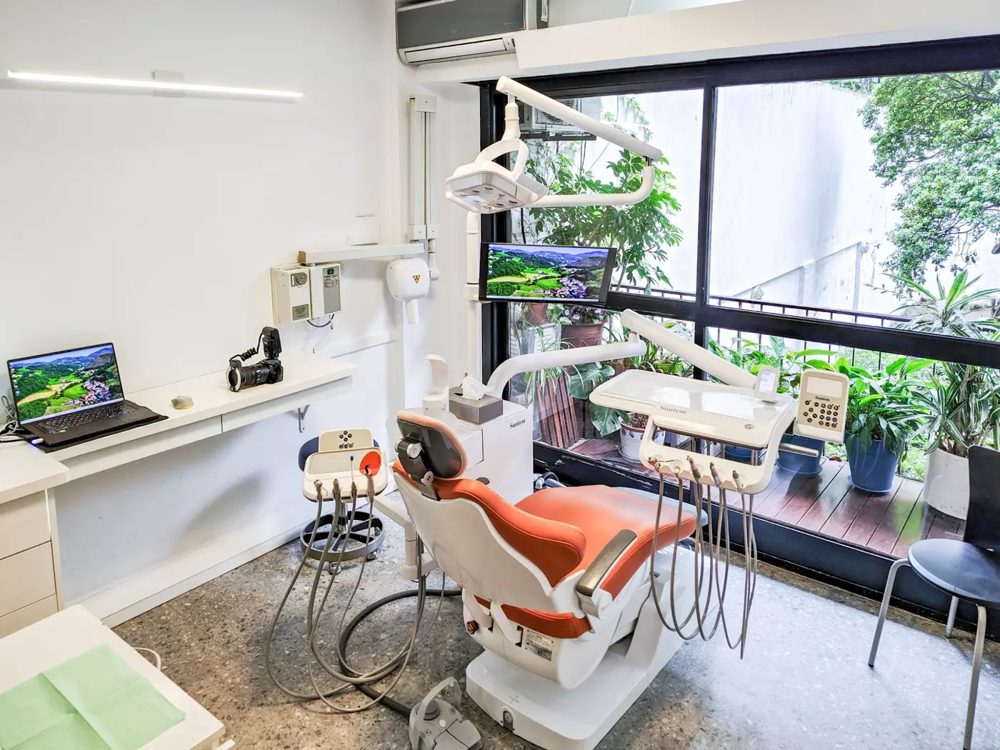
Desde1969
Odontología integral y rehabilitación oral
Más de cinco décadas de trayectoria en Buenos Aires. Operatoria dental, rehabilitación oral e implantes, con diagnóstico y planificación digital.
01 · El consultorio
Luz natural y un pulmón verde para estar tranquilos
Los dos consultorios tienen ventanales sobre un jardín. Un entorno pensado para que cada visita sea calma, sin apuros y con el tiempo necesario para explicar los procedimientos.
Recorrido en video
02 · Tratamientos
Áreas de trabajo
-
Operatoria dental
Resinas, incrustaciones y blanqueamientos, con materiales actuales y el menor malestar posible.
-
Nuestra especialidad
Rehabilitación oral
Coronas, prótesis e implantes, con un plan claro desde el primer día y controles a lo largo de los años.
-
Mantenimiento periodontal
Controles periódicos y tratamiento periodontal para cuidar encías y dientes a largo plazo.
-
Tecnología digital
Escáner intraoral e impresoras 3D para diagnosticar y planificar cada tratamiento con precisión.
Atención clínica con criterio y paciencia
Cada tratamiento empieza con un diagnóstico completo y una explicación clara del plan de trabajo. En la consulta mostramos en pantalla lo que observamos, para que cada decisión se tome con información.
- Diagnóstico completoRevisión, fotos y escaneo intraoral cuando hace falta.
- Plan explicado en pantallaVes lo mismo que vemos nosotros y elegimos juntos el camino.
- Tratamiento y seguimientoQuien hizo el trabajo lo controla y acompaña al paciente a lo largo del tiempo.
03 · Planificación digital
Cambia la herramienta, no el criterio
Dos casos reales planificados paso a paso. Sobre un modelo de yeso o en pantalla, el diseño se apoya en los mismos principios clínicos; la tecnología nos permite planificar con más precisión y mostrarte el resultado antes de empezar.
Pieza 11 con reabsorción dentinaria no tratable. El análisis digital permitió definir la posición del implante y preparar la guía quirúrgica antes de comenzar. Se decidió la exodoncia, un implante inmediato, un injerto de tejido conectivo y relleno con injerto óseo, con un provisorio adhesivo a las piezas vecinas.
1Diagnóstico
Situación inicial Tomografía: reabsorción dentinaria 2Planificación digital y guía quirúrgica
Diseño digital de la cirugía Guía quirúrgica en boca 3Cirugía
Pieza 11 extraída Toma del injerto de tejido conectivo Implante e injerto óseo, vista oclusal Imágenes intraquirúrgicas
Muestran la cirugía real y pueden resultar impactantes. Se muestran solo al presionar el botón.4Provisorio y resultado
Provisorio adhesivo, inmediatamente después de la cirugía Corona final
Un mismo caso planificado por dos caminos, el analógico y el digital, para mostrar que lo que define el resultado no es la herramienta sino el criterio clínico.
1Diagnóstico
Situación inicial Escaneo digital inicial 2Planificación: dos caminos, un mismo diseño
Diseño digital de los dientes anteriores Encerado analógico sobre modelo 3Prueba y resultado
Prueba de mock-up en boca Resultado final con resinas
04 · Casos clínicos
Resultados reales
Casos tratados en el consultorio. En cada comparación, el antes está a la izquierda y el después a la derecha.
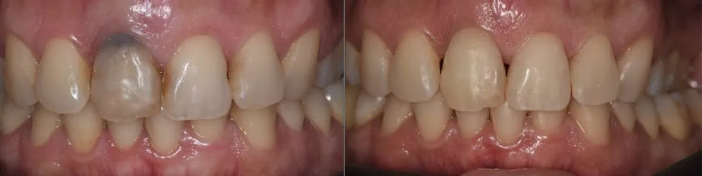
AntesDespués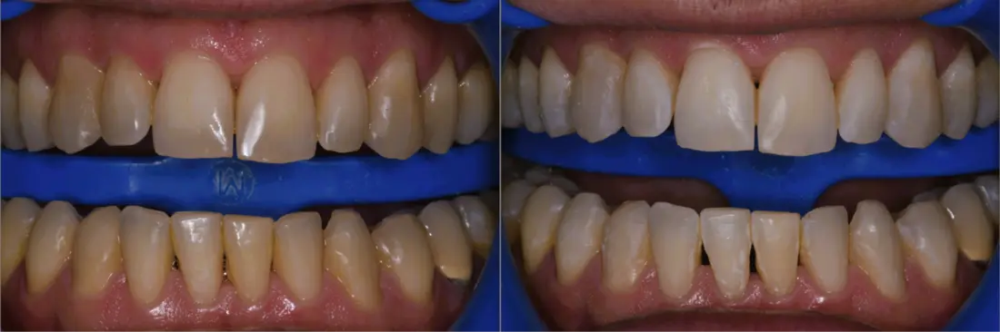
AntesDespués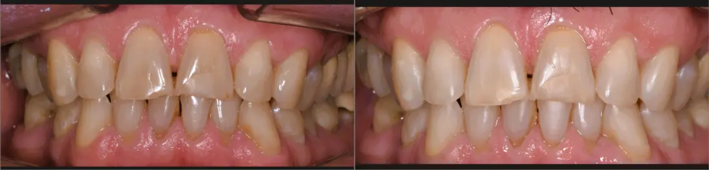
AntesDespués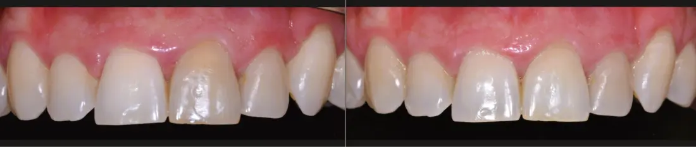
AntesDespués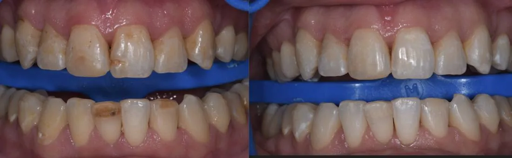
AntesDespués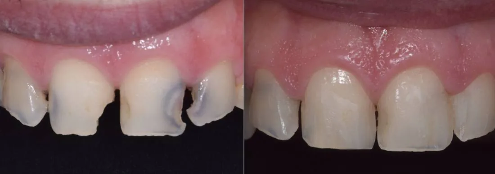
AntesDespués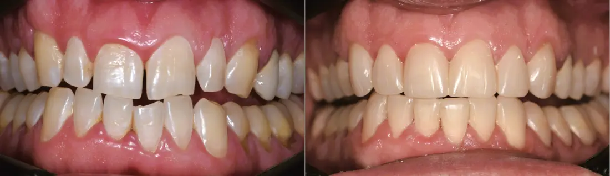
AntesDespués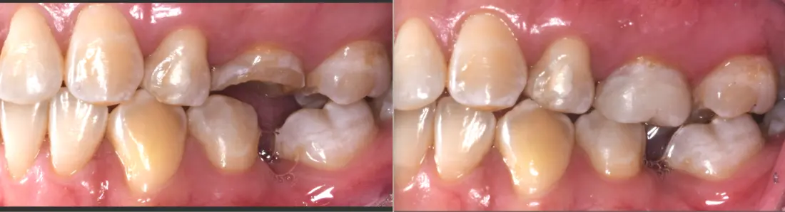
AntesDespués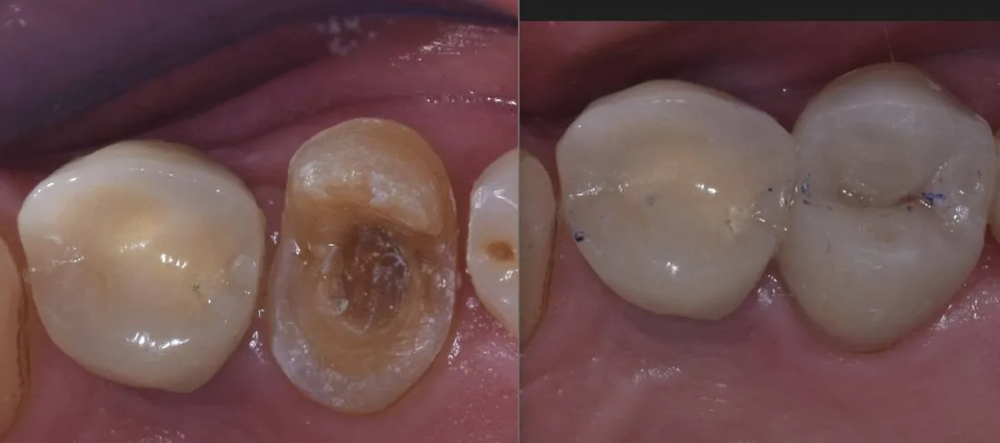
AntesDespués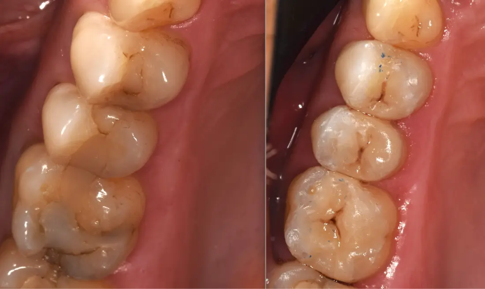
AntesDespués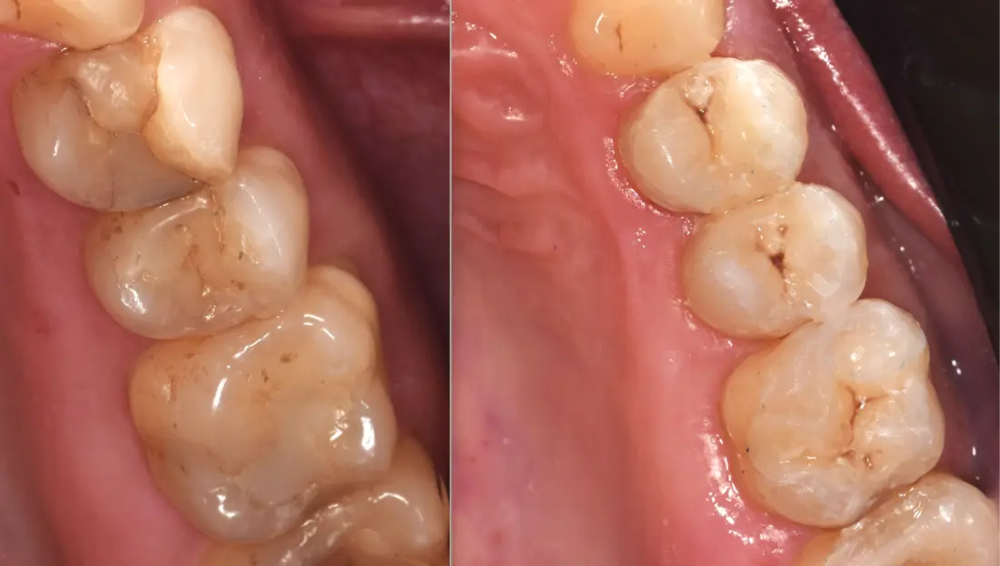
AntesDespués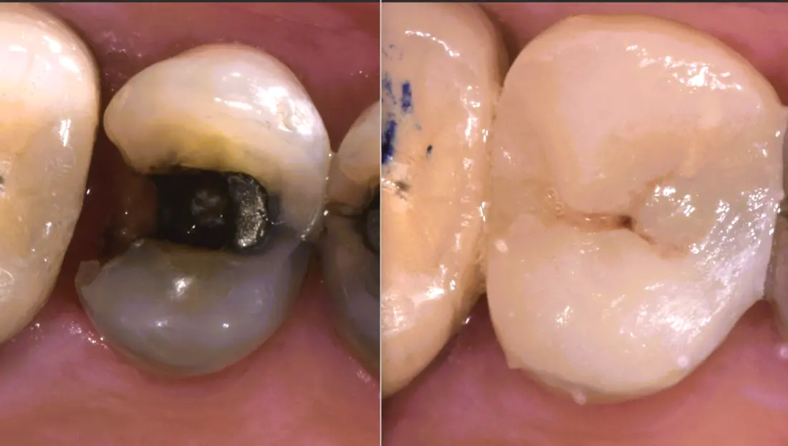
AntesDespués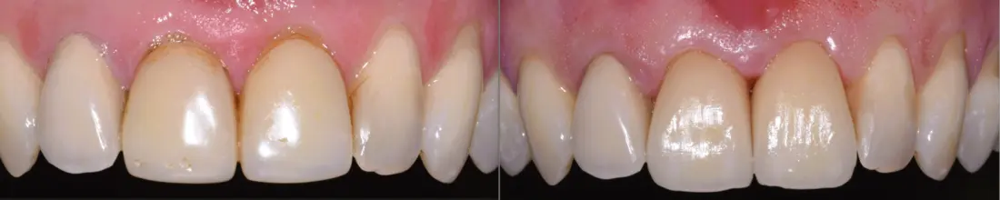
AntesDespués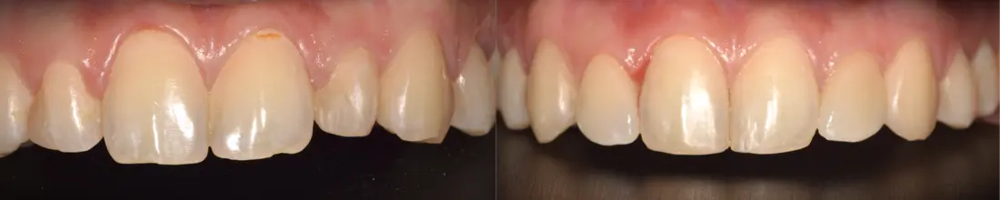
AntesDespués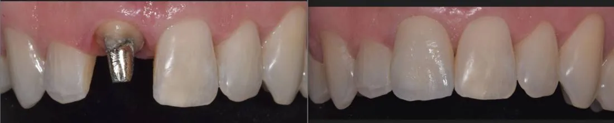
AntesDespués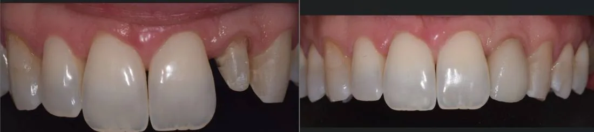
AntesDespués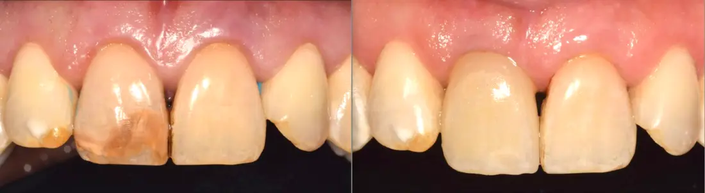
AntesDespués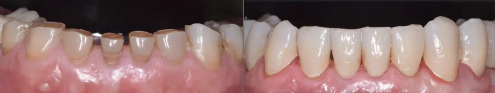
AntesDespués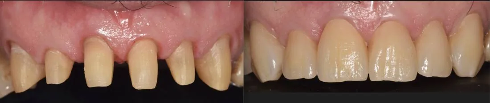
AntesDespués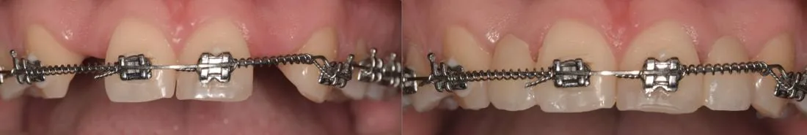
AntesDespués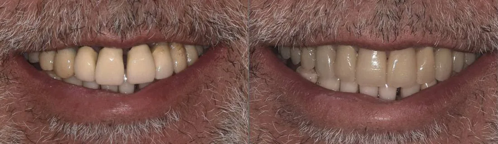
AntesDespués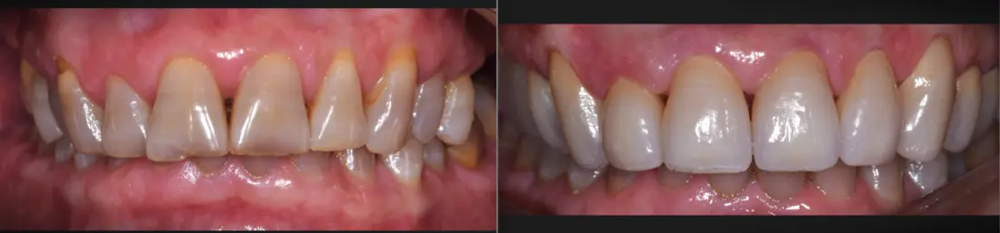
AntesDespués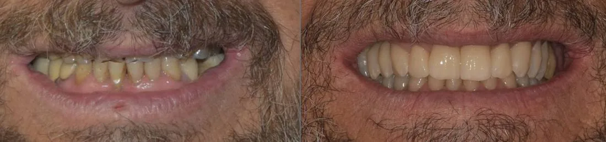
AntesDespués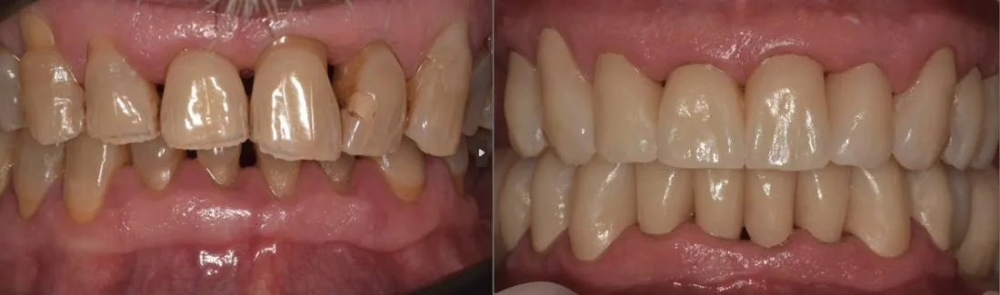
AntesDespués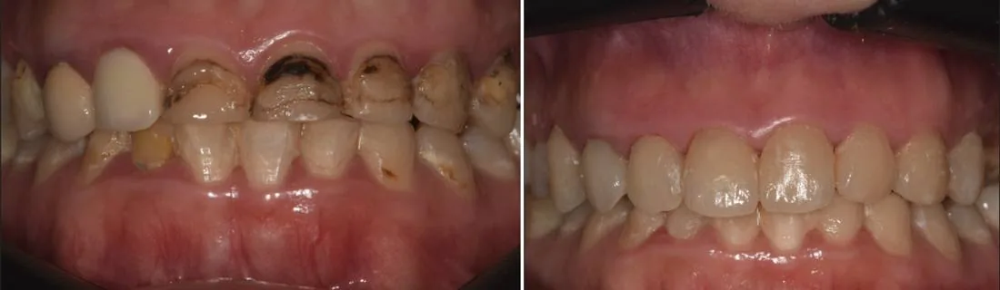
AntesDespués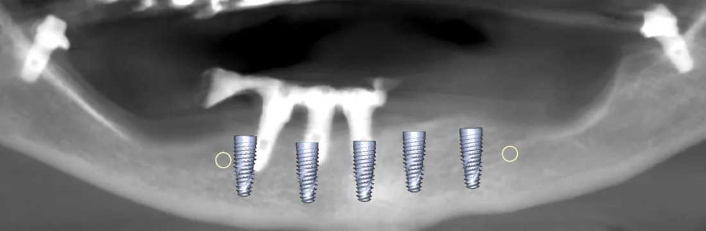
Planificación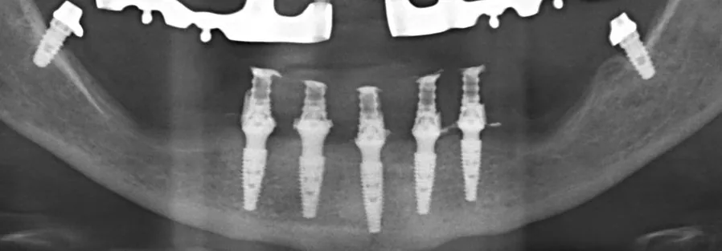
Implantes colocados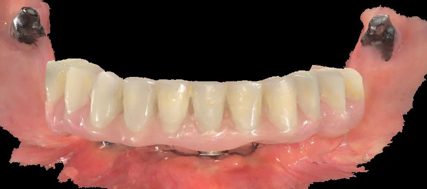
Prótesis provisoria05 · Equipo
Más de 55 años de trayectoria
Un tratamiento dental se controla durante años. Por eso importa atenderse en un lugar que sigue estando: donde quien hizo el trabajo puede revisarlo y acompañarte con el tiempo.
- 1969El Dr. Mario Guerra funda el consultorio.
- ContinuidadSu hijo, el Dr. Claudio Guerra, lo continúa y lo hace crecer.
- HoyEl Dr. Mariano Mininni, que lo siente como propio, sigue ese legado.
Junto a
Dra. Lara Fernández06 · Contacto
Solicitar turno
Consultas por WhatsApp o por mail, con respuesta en el día. Quienes ya son pacientes pueden dejar su opinión en Google Maps.
- Dirección
- Aráoz 2879, 1° D
Buenos Aires - +54 9 11 2403-7668
- Reseñas
- Ver en Google Maps ↗